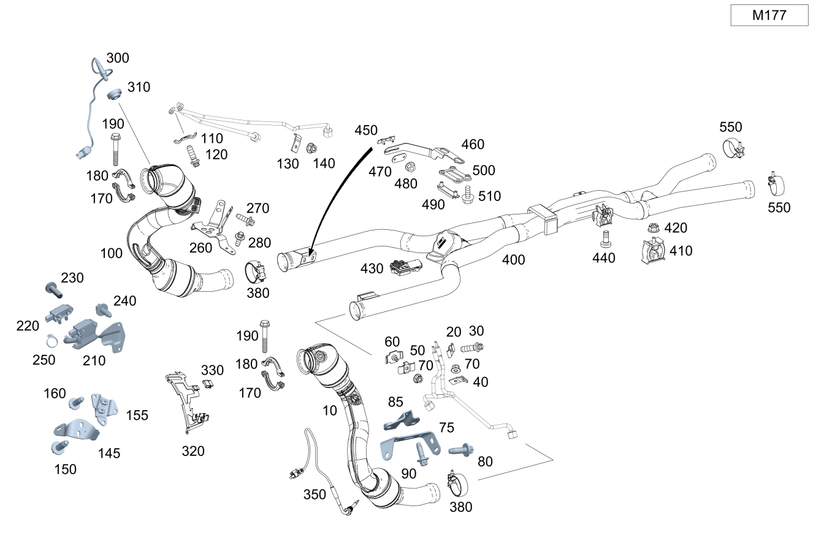

| № | Артикул | Название | Кол. | Примечание |
|---|---|---|---|---|
| 10 | A 205 490 08 20 | Трубка выпуска ОГ (EXHAUST GAS LINE) | 1 | Спереди слева |
| 10 | A 253 490 21 01 | Трубопровод ОГ пер. (EXHAUST GAS LINE, FRONT) | 1 | Спереди слева |
| 10 | A 205 490 95 03 | Трубопровод ОГ пер. (EXHAUST GAS LINE, FRONT) | 1 | Спереди слева |
| 10 | A 205 490 95 03 | Трубопровод ОГ пер. (EXHAUST GAS LINE, FRONT) | 1 | Спереди слева |
| 10 | A 253 490 23 01 | Трубопровод ОГ пер. (EXHAUST GAS LINE, FRONT) | 1 | Спереди слева |
| 10 | A 253 490 23 01 | Трубопровод ОГ пер. (EXHAUST GAS LINE, FRONT) | 1 | Спереди слева |
| 10 | A 253 490 23 01 | Трубопровод ОГ пер. (EXHAUST GAS LINE, FRONT) | 1 | Спереди слева |
| 10 | A 205 490 98 03 | Трубопровод ОГ пер. (EXHAUST GAS LINE, FRONT) | 1 | Спереди слева |
| 10 | A 253 490 23 01 | Трубопровод ОГ пер. (EXHAUST GAS LINE, FRONT) | 1 | Спереди слева |
| 10 | A 253 490 51 03 | Трубопровод ОГ пер. (EXHAUST GAS LINE, FRONT) | 1 | Спереди слева |
| 10 | A 253 490 51 03 | Трубопровод ОГ пер. (EXHAUST GAS LINE, FRONT) | 1 | Спереди слева |
| 10 | A 253 490 51 03 | Трубопровод ОГ пер. (EXHAUST GAS LINE, FRONT) | 1 | Спереди слева |
| 20 | A 000 492 03 00 | Крепежная скоба (MOUNTING BRACKET) | 1 | Спереди слева |
| 30 | N 910142 005002 | Винт с 6-гр. глвк (HEXALOBULAR SCREW) | 1 | Трубопровод ОГ слева; M 5 X 16 |
| 40 | A 251 491 04 41 | Держатель (HOLDER) | 1 | Спереди слева |
| 50 | A 164 491 02 41 | Держатель (HOLDER) | 1 | Спереди слева |
| 60 | A 000 492 04 00 | Крепежная скоба (MOUNTING BRACKET) | 1 | Спереди слева снаружи |
| 70 | A 000 990 77 24 | Гайка специальной формы (NUT, SPECIAL FORM) | 2 | Спереди слева; M5 |
| 75 | A 253 492 40 00 | Держатель (HOLDER) | 1 | Спереди слева |
| 75 | A 213 492 17 00 | Держатель (HOLDER) | 1 | Спереди слева |
| 80 | N 000000 000276 | Винт с 6-гр. глвк (HEXALOBULAR SCREW) | 2 | Спереди слева; M8X20 |
| 85 | A 222 492 05 00 | Держатель (HOLDER) | 1 | Спереди слева |
| 85 | A 222 492 05 00 | Держатель (HOLDER) | 1 | Спереди слева |
| 85 | A 222 492 24 00 | Держатель (HOLDER) | 1 | Спереди слева |
| 85 | A 222 492 24 00 | Держатель (HOLDER) | 1 | Спереди слева |
| 85 | A 222 492 24 00 | Держатель (HOLDER) | 1 | Спереди слева |
| 85 | A 222 492 24 00 | Держатель (HOLDER) | 1 | Спереди слева |
| 85 | A 222 492 24 00 | Держатель (HOLDER) | 1 | Спереди слева |
| 90 | N 000000 000276 | Винт с 6-гр. глвк (HEXALOBULAR SCREW) | 4 | Спереди слева; M8X20 |
| 90 | N 000000 000276 | Винт с 6-гр. глвк (HEXALOBULAR SCREW) | 4 | Спереди слева; M8X20 |
| 100 | A 205 490 01 05 | Трубопровод ОГ пер. (EXHAUST GAS LINE, FRONT) | 1 | Спереди справа |
| 100 | A 205 490 34 02 | Трубопровод ОГ пер. (EXHAUST GAS LINE, FRONT) | 1 | Спереди справа |
| 100 | A 205 490 01 05 | Трубопровод ОГ пер. (EXHAUST GAS LINE, FRONT) | 1 | Спереди справа |
| 100 | A 205 490 01 05 | Трубопровод ОГ пер. (EXHAUST GAS LINE, FRONT) | 1 | Спереди справа |
| 100 | A 205 490 78 02 | Трубопровод ОГ пер. (EXHAUST GAS LINE, FRONT) | 1 | Спереди справа |
| 100 | A 205 490 34 02 | Трубопровод ОГ пер. (EXHAUST GAS LINE, FRONT) | 1 | Спереди справа |
| 100 | A 205 490 34 02 | Трубопровод ОГ пер. (EXHAUST GAS LINE, FRONT) | 1 | Спереди справа |
| 100 | A 205 490 34 02 | Трубопровод ОГ пер. (EXHAUST GAS LINE, FRONT) | 1 | Спереди справа |
| 100 | A 205 490 09 20 | Трубка выпуска ОГ (EXHAUST GAS LINE) | 1 | Спереди справа |
| 100 | A 205 490 78 02 | Трубопровод ОГ пер. (EXHAUST GAS LINE, FRONT) | 1 | Спереди справа |
| 110 | A 000 492 03 00 | Крепежная скоба (MOUNTING BRACKET) | 1 | Спереди справа |
| 120 | N 910142 005002 | Винт с 6-гр. глвк (HEXALOBULAR SCREW) | 1 | Трубопровод ОГ справа; M 5 X 16 |
| 130 | A 251 491 04 41 | Держатель (HOLDER) | 1 | Спереди справа |
| 140 | A 000 990 77 24 | Гайка специальной формы (NUT, SPECIAL FORM) | 1 | Спереди справа; M5 |
| 145 | A 290 492 01 00 | Держатель (HOLDER) | 1 | Спереди справа |
| 145 | A 253 492 06 00 | Держатель (HOLDER) | 1 | Спереди справа |
| 150 | N 000000 000276 | Винт с 6-гр. глвк (HEXALOBULAR SCREW) | 2 | Спереди справа; M8X20 |
| 155 | A 222 492 06 00 | Держатель (HOLDER) | 1 | Спереди справа |
| 155 | A 222 492 06 00 | Держатель (HOLDER) | 1 | Спереди справа |
| 160 | N 000000 000276 | Винт с 6-гр. глвк (HEXALOBULAR SCREW) | 5 | Спереди справа; M8X20 |
| 160 | N 000000 000276 | Винт с 6-гр. глвк (HEXALOBULAR SCREW) | 5 | Спереди справа; M8X20 |
| 170 | A 000 995 61 33 | Проф. хомут сист. вып. ОГ (PROFILE CLAMP, EXH. SYS.) | 2 | Выпускная система к турбокомпрессору |
| 180 | A 000 995 62 33 | Проф. хомут сист. вып. ОГ (PROFILE CLAMP, EXH. SYS.) | 2 | Выпускная система к турбокомпрессору |
| 190 | A 210 990 09 04 | Винт Torx External (HEXALOBULAR HEAD SCREW) | 4 | Хомут; M8 X 55 |
| 210 | A 177 140 41 00 | Трубка выпуска ОГ (EXHAUST GAS LINE) | 1 | Спереди справа |
| 210 | A 177 140 14 00 | Трубка выпуска ОГ (EXHAUST GAS LINE) | 1 | Спереди справа |
| 210 | A 177 140 88 00 | Трубка выпуска ОГ (EXHAUST GAS LINE) | 1 | Спереди справа |
| 210 | A 177 140 88 00 | Трубка выпуска ОГ (EXHAUST GAS LINE) | 1 | Спереди справа |
| 210 | A 177 140 88 00 | Трубка выпуска ОГ (EXHAUST GAS LINE) | 1 | Спереди справа |
| 210 | A 177 140 88 00 | Трубка выпуска ОГ (EXHAUST GAS LINE) | 1 | Спереди справа |
| 220 | A 000 905 91 08 | - Дифф. датчик давления (DIFF. PRESSURE SENSOR) | 1 | Спереди справа |
| 220 | A 000 905 93 08 | - Датчик давления (PRESSURE SENSOR) | 1 | Спереди справа |
| 220 | A 000 905 93 08 | - Датчик давления (PRESSURE SENSOR) | 1 | Спереди справа |
| 230 | N 000000 001149 | - Винт с 6-гр. глвк (HEXALOBULAR SCREW) | 1 | Дифференциальный датчик давления; M6X25 |
| 230 | N 000000 002439 | - Винт с 6-гр. глвк (HEXALOBULAR SCREW) | 1 | Дифференциальный датчик давления; M6X25 |
| 240 | N 910143 006000 | Винт с 6-гр. глвк (HEXALOBULAR SCREW) | 2 | Дифференциальный датчик давления; M6X12 |
| 250 | A 000 995 60 10 | Хомут для шланга (HOSE CLAMP) | 1 | |
| 250 | A 003 997 87 90 | Хомут для шланга (HOSE CLAMP) | 1 | 13.5 MM |
| 260 | A 177 490 02 00 | Держатель (HOLDER) | 1 | Выпускная система к блоку цилиндров |
| 260 | A 177 490 51 02 | Держатель (HOLDER) | 1 | Выпускная система к блоку цилиндров |
| 260 | A 177 490 68 00 | Держатель (HOLDER) | 1 | Выпускная система к блоку цилиндров |
| 260 | A 177 490 51 02 | Держатель (HOLDER) | 1 | Выпускная система к блоку цилиндров |
| 260 | A 177 490 02 00 | Держатель (HOLDER) | 1 | Выпускная система к блоку цилиндров |
| 270 | N 910143 008002 | Винт с 6-гр. глвк (HEXALOBULAR SCREW) | 4 | Держатель к выпускной системе слева и справа; M8X25 |
| 270 | N 000000 000276 | Винт с 6-гр. глвк (HEXALOBULAR SCREW) | 4 | Держатель к выпускной системе слева и справа; M8X20 |
| 280 | N 000000 000276 | Винт с 6-гр. глвк (HEXALOBULAR SCREW) | 4 | Держатель к блоку цилиндров; M8X20 |
| 300 | A 000 542 34 00 | Лямбда-зонд (LAMBDA SENSOR) | 2 | Слева и справа перед катализатором |
| 300 | A 000 542 34 00 | Лямбда-зонд (LAMBDA SENSOR) | 1 | Слева |
| 300 | A 000 542 13 00 | Лямбда-зонд (LAMBDA SENSOR) | 1 | После катализатора |
| 300 | A 009 542 58 18 | Лямбда-зонд (LAMBDA SENSOR) | 1 | Регулирующий зонд справа перед катализатором |
| 300 | A 000 542 20 04 | Лямбда-зонд (LAMBDA SENSOR) | 1 | Диагностический зонд справа после катализатора |
| 310 | A 205 491 02 30 | Экран защитный (SCREENING PLATE) | 2 | Для крепления лямбда\-зонда перед катализатором |
| 310 | A 205 491 35 00 | Экран защитный (SCREENING PLATE) | 2 | Для крепления лямбда\-зонда перед катализатором |
| 320 | A 177 150 14 73 | Держатель (HOLDER) | 1 | Кислородный датчик |
| 320 | A 177 150 25 73 | Держатель (HOLDER) | 1 | Кислородный датчик |
| 320 | A 177 150 90 00 | Держатель (HOLDER) | 1 | Кислородный датчик |
| 320 | A 177 150 80 00 | Держатель (HOLDER) | 1 | Кислородный датчик |
| 320 | A 177 150 90 00 | Держатель (HOLDER) | 1 | Кислородный датчик |
| 320 | A 177 150 80 00 | Держатель (HOLDER) | 1 | Кислородный датчик |
| 320 | A 177 150 80 00 | Держатель (HOLDER) | 1 | Кислородный датчик |
| 330 | A 000 541 01 40 | Держатель (HOLDER) | 2 | Штекер кислородного датчика; 18 X 24 MM |
| 330 | A 000 541 01 40 | Держатель (HOLDER) | 2 | Штекер кислородного датчика; 18 X 24 MM |
| 330 | A 000 541 01 40 | Держатель (HOLDER) | 1 | Штекер кислородного датчика; 18 X 24 MM |
| 330 | A 000 541 01 40 | Держатель (HOLDER) | 1 | Штекер кислородного датчика; 18 X 24 MM |
| 330 | A 000 541 01 40 | Держатель (HOLDER) | 4 | К экрану; 18 X 24 MM |
| 350 | A 000 542 13 00 | Лямбда-зонд (LAMBDA SENSOR) | 2 | Слева и справа после катализатора |
| 350 | A 000 905 60 13 | Датчик температуры (TEMPERATURE SENSOR) | 2 | Слева и справа |
| 380 | A 000 490 15 41 | хомут (CLAMP) | 2 | Передняя часть выпускной системы к средней части выпускной системы; Ø70 MM TUBE | Ø80.4 BOWL |
| 400 | A 205 490 04 20 | Трубка выпуска ОГ (EXHAUST GAS LINE) | 1 | Посередине |
| 400 | A 205 490 61 00 | Ср. трубопровод ОГ (EXHAUST GAS LINE, CENTER) | 1 | Посередине |
| 400 | A 205 490 61 00 | Ср. трубопровод ОГ (EXHAUST GAS LINE, CENTER) | 1 | Посередине |
| 400 | A 205 490 42 01 | Ср. трубопровод ОГ (EXHAUST GAS LINE, CENTER) | 1 | Посередине |
| 400 | A 205 490 64 01 | Ср. трубопровод ОГ (EXHAUST GAS LINE, CENTER) | 1 | Посередине |
| 400 | A 205 490 64 01 | Ср. трубопровод ОГ (EXHAUST GAS LINE, CENTER) | 1 | Посередине |
| 410 | A 205 492 01 44 | - Подвесное кольцо (SUSPENSION RING) | 2 | Средняя часть выпускной системы слева и справа |
| 420 | N 000000 003175 | - Гайка (NUT) | 2 | Подвесное кольцо к средней части выпускной системы; M8 |
| 430 | A 190 906 45 00 | - Исполнительный элемент (ACTUATOR COMPONENT) | 1 | На средней выпускной трубе |
| 430 | A 190 906 52 01 | - Исполнительный элемент (ACTUATOR COMPONENT) | 1 | На средней выпускной трубе |
| 430 | A 290 906 39 00 | - Исполнительный элемент (ACTUATOR COMPONENT) | 1 | На средней выпускной трубе |
| 440 | N 000000 001427 | Винт с 6-гр. глвк (HEXALOBULAR SCREW) | 2 | Крепление средней части выпускной системы; M8X20 |
| 450 | A 221 490 00 44 | Пластина (PLATE) | 2 | Держатель слева и справа к средней части выпускной системы |
| 460 | A 205 492 37 41 | Держатель (HOLDER) | 1 | Слева |
| 460 | A 205 492 38 41 | Держатель (HOLDER) | 1 | Справа |
| 470 | A 212 492 01 18 | Крепежная пластина (MOUNTING PLATE) | 2 | Держатель слева и справа к средней части выпускной системы |
| 480 | A 002 990 64 54 | Гайка шестигранная (HEX. NUT W CLAMPING PART) | 4 | Держатель слева и справа к средней части выпускной системы; M6 |
| 490 | A 221 492 01 30 | Защитный экран (PROTECTIVE METAL SHEET) | 1 | Держатель слева и справа к коробке передач |
| 490 | A 140 492 00 18 | Подкладная пластина (SHIM PLATE) | 1 | Держатель слева и справа к коробке передач |
| 500 | A 140 492 01 18 | Подкладная пластина (SHIM PLATE) | 1 | Держатель слева и справа к коробке передач |
| 510 | N 910105 008014 | Винт с 6-гранной головкой (HEXAGON HEAD BOLT) | 2 | Держатель слева и справа к коробке передач; M8X35 |
| 550 | A 000 490 14 41 | хомут (CLAMP) | 2 | Средняя часть выпускной системы к задней части выпускной системы; Ø65MM TUBE | Ø75.2MM BOWL |
| 600 | A 205 490 01 35 | Трубка выпуска ОГ (EXHAUST GAS LINE) | 1 | Слева |
| 600 | A 205 490 29 03 | Трубопровод ОГ задний (EXHAUST GAS LINE, REAR) | 1 | Слева |
| 600 | A 205 490 29 03 | Трубопровод ОГ задний (EXHAUST GAS LINE, REAR) | 1 | Слева |
| 600 | A 205 490 47 04 | Трубопровод ОГ задний (EXHAUST GAS LINE, REAR) | 1 | Слева |
| 600 | A 205 490 65 01 | Трубопровод ОГ задний (EXHAUST GAS LINE, REAR) | 1 | Слева |
| 600 | A 205 490 58 02 | Трубопровод ОГ задний (EXHAUST GAS LINE, REAR) | 1 | Слева |
| 600 | A 205 490 58 02 | Трубопровод ОГ задний (EXHAUST GAS LINE, REAR) | 1 | Слева |
| 600 | A 205 490 61 02 | Трубопровод ОГ задний (EXHAUST GAS LINE, REAR) | 1 | Слева |
| 600 | A 205 490 06 35 | Трубка выпуска ОГ (EXHAUST GAS LINE) | 1 | Слева |
| 600 | A 205 490 61 02 | Трубопровод ОГ задний (EXHAUST GAS LINE, REAR) | 1 | Слева |
| 610 | A 231 492 00 44 | - Подвес трубопровода ОГ (SUSPENSION, EXH. GAS LINE) | 2 | Трубопровод ОГ слева |
| 610 | A 231 492 00 44 | - Подвес трубопровода ОГ (SUSPENSION, EXH. GAS LINE) | 2 | Трубопровод ОГ слева |
| 620 | A 205 492 35 41 | - Держатель (HOLDER) | 1 | Выпускная система слева |
| 630 | A 290 906 40 00 | - Исполнительный элемент (ACTUATOR COMPONENT) | 1 | К задней левой выпускной трубе |
| 630 | A 290 906 40 00 | - Исполнительный элемент (ACTUATOR COMPONENT) | 1 | К задней левой выпускной трубе |
| 630 | A 190 906 45 00 | - Исполнительный элемент (ACTUATOR COMPONENT) | 1 | К задней левой выпускной трубе |
| 640 | N 000000 008385 | Винт с 6-гр. глвк (HEXALOBULAR SCREW) | 2 | Несущий кронштейн к кузову справа; M8X22 |
| 700 | A 205 490 00 35 | Трубка выпуска ОГ (EXHAUST GAS LINE) | 1 | Справа |
| 700 | A 205 490 32 03 | Трубопровод ОГ задний (EXHAUST GAS LINE, REAR) | 1 | Справа |
| 700 | A 205 490 32 03 | Трубопровод ОГ задний (EXHAUST GAS LINE, REAR) | 1 | Справа |
| 700 | A 205 490 48 04 | Трубопровод ОГ задний (EXHAUST GAS LINE, REAR) | 1 | Справа |
| 700 | A 205 490 66 01 | Трубопровод ОГ задний (EXHAUST GAS LINE, REAR) | 1 | Справа |
| 700 | A 205 490 66 01 | Трубопровод ОГ задний (EXHAUST GAS LINE, REAR) | 1 | Справа |
| 700 | A 205 490 40 02 | Трубопровод ОГ задний (EXHAUST GAS LINE, REAR) | 1 | Справа |
| 700 | A 205 490 40 02 | Трубопровод ОГ задний (EXHAUST GAS LINE, REAR) | 1 | Справа |
| 700 | A 205 490 40 02 | Трубопровод ОГ задний (EXHAUST GAS LINE, REAR) | 1 | Справа |
| 700 | A 205 490 43 02 | Трубопровод ОГ задний (EXHAUST GAS LINE, REAR) | 1 | Справа |
| 700 | A 205 490 43 02 | Трубопровод ОГ задний (EXHAUST GAS LINE, REAR) | 1 | Справа |
| 700 | A 205 490 07 35 | Трубка выпуска ОГ (EXHAUST GAS LINE) | 1 | Справа |
| 700 | A 205 490 43 02 | Трубопровод ОГ задний (EXHAUST GAS LINE, REAR) | 1 | Справа |
| 710 | A 231 492 00 44 | - Подвес трубопровода ОГ (SUSPENSION, EXH. GAS LINE) | 2 | Трубопровод ОГ справа |
| 710 | A 231 492 00 44 | - Подвес трубопровода ОГ (SUSPENSION, EXH. GAS LINE) | 2 | Трубопровод ОГ справа |
| 720 | A 205 492 36 41 | - Держатель (HOLDER) | 1 | Выпускная система справа |
| 730 | A 190 906 45 00 | - Исполнительный элемент (ACTUATOR COMPONENT) | 1 | К задней правой выпускной трубе |
| 730 | A 290 906 41 00 | - Исполнительный элемент (ACTUATOR COMPONENT) | 1 | К задней правой выпускной трубе |
| 730 | A 290 906 41 00 | - Исполнительный элемент (ACTUATOR COMPONENT) | 1 | К задней правой выпускной трубе |
| 740 | N 000000 008385 | Винт с 6-гр. глвк (HEXALOBULAR SCREW) | 2 | Несущий кронштейн к кузову справа; M8X22 |
| 750 | A 205 540 41 00 | Электрический жгут (ELECTRICAL WIRING HARNESS) | 1 | Адаптерный провод заслонки в выпускном тракте |
Позиций: 158 · подписано на схемах: 158 · колесо — плавный зум в курсор, перетаскивание — пан, двойной клик — зум, клик по артикулу — скопировать.